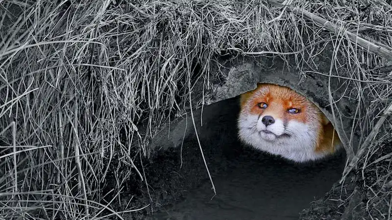
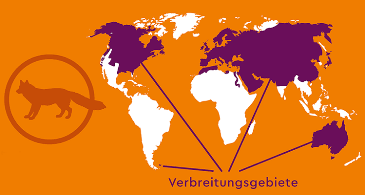
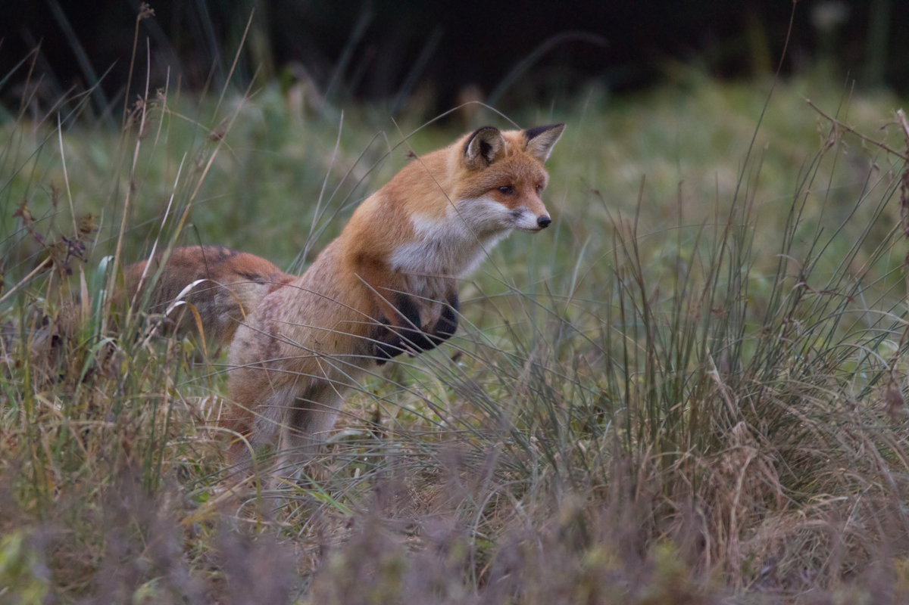
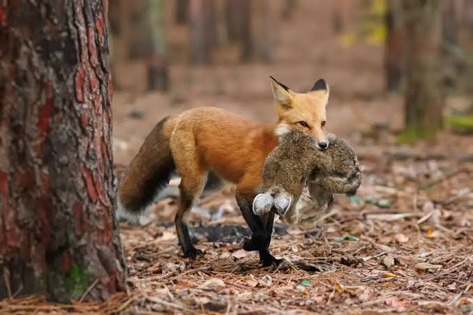
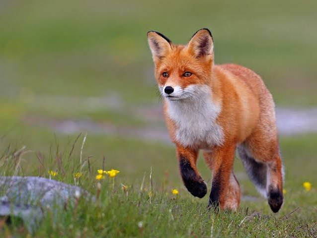

Rotfuchs
Auf dieser Website erfährst du spannende Informationen über Rotfüchse
Füchse sind anpassungsfähige Raubtiere aus der Familie der Hundeartigen (Canidae). Am bekanntesten ist der Rotfuchs (Vulpes vulpes), der als häufigster Wildhund Europas auch in der Schweiz und in Städten weit verbreitet ist. [1, 2, 3, 4, 5]
Grösse, Gewicht und Fortpflanzung
Beispieltext. Hier stehen alle wichtigen Infos über Rotfüchse.
Größe: 35-50 cm (Schulterhöhe). Geschwindigkeit: Bis 50 km/h (Kurzstrecke). Gewicht: 2-10 kg. Feinde: Bären, Adler. Verbreitung: Europa, Asien, Russland, Nordamerika. Ordnung: Raubtiere. Merkmale: Raubtier mit weiß-rotem Fell und buschigem Schwanz. Füchse sind kleine Raubtiere. Sie leben in Europa, Asien, Afrika, Nordamerika und Australien. In Europa ist der Rotfuchs am häufigsten. Seine auffälligsten Merkmale sind das rote Fell, das weiße Maul, die weiße Brust, die dunkelbraunen Pfoten und der lange, buschige Schwanz. Um ihn geht es in dieser Webseite.
Lebensraum
Der Rotfuchs ist extrem anpassungsfähig und bewohnt nahezu alle Lebensräume der nördlichen Erdhalbkugel – von Wäldern über offene Landschaften bis hin zu Städten.
Wälder:
Dichte und lichte Wälder bieten Unterschlupf und reichlich Beute.
Offenland:
Wiesen, Felder, Heckenlandschaften und Halbwüsten gehören ebenfalls zu seinem Revier.


Jagdverhalten
Rotfuchs. Die bekannteste und charakteristischste Technik des Rotfuchs ist der Mäusesprung Der Fuchs lokalisiert unter der Oberfläche oder im Gras verstreute Nager mit seinem hervorragenden Gehör und Gesichtssinn. Er springt in einem steilen Winkel ab, gleicht den Flug mit seinem buschigen Schwanz aus und landet mit den Vorderpfoten exakt auf der Beute.

Nahrung
Der Rotfuchs ist ein anpassungsfähiger Allesfresser (Opportunist), dessen Speiseplan stark von der Jahreszeit und seinem Lebensraum abhängt.
Kleinsäuger:
Kleine Nagetiere – insbesondere Wühlmäuse – machen den größten Teil seiner Beute aus.Insekten & Würmer:
im Sommer stehen auch Regenwürmer und Käfer z.B Laufkäfer auf dem Speiseplan.Vögel & Eier:
Bodenbrüter, Jungvögel und gelegentlich Hühner stehen ebenfals auf seinem Speiseplan.Weitere Tiere:
Kaninchen, Feldhasen, Frösche, Reptilien sowie Aas (z. B. überfahrene Tiere oder verendetes Wild).
Bildergalerie
